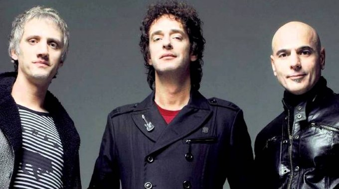

El rock nacional argentino tuvo en los años 70 una explosión de artistas que dió rienda suelta a su creatividad, comenzaron las giras nacionales, sobre todo de las bandas de rock provenientes de Buenos Aires, como las creadas por las leyendas del rock argentino Luis Alberto Spinetta, Charly García, Miguel Abuelo, Pappo, y muchos otros. Con la llega de los años 80, el rock se sumó a la moda de los sonidos electrónicos, el glam, los peinados extravagantes y la parafernalia del pop. En ese contexto, surgieron en Argentina nuevos grupos de rock que tomaron la posta de los artistas internacionales, para desarrollar su propia identidad, una de esas bandas, que se convirtió en la más importante banda de latinoamérica, fue Soda Stereo. Comenzaba la década de los años 80 cuando, más precisamente en el año 1982, tres jóvenes se juntaron para darle forma a sus sueños de ser rockeros. Gustavo Cerati, en voz y guitarra, Zeta Bosio en bajo y Charly Alberti en batería formaron un trío que transformó la forma de ver y escuchar la música en nuestro país. Según la historia oficial, Cerati entabló amistad con Zeta Bosio tras estar tocando en algunos bares de Punta del Este, en grupos de covers para ganar dinero en el verano. Luego, mientras buscaban otro integrante para su proyecto musical, conocieron a Charly Alberti de una manera extraña, ya que este pretendía sin éxito a la hermana de Cerati, hasta que un día, en una conversación casual por teléfono, se presentó como baterista, llamando la curiosidad de Zeta y Gustavo, quienes fueron a verlo tocar, y lo integraron a su proyecto. Los inicios de Soda Stereo fueron como los de muchas bandas, cambios frecuentes de nombre, de integrantes, entre los que estuvieron Daniel Melero, Richard Coleman, Andrés Calamaro y otros que luego brillaron con luz propia. Luego de tocar en bares, pubs, y todo evento que se les pusiera en el camino, la radio fue la responsable de dar a conocer su música masivamente. La discografía de esta banda de rock marcó varias eras de sonido, desde su primer disco oficial llamado “Soda Stereo” , editado en el año 1984, hasta “Comfort y Música para Volar” de 1997, Soda Stereo marcó los estándares del pop rock no sólo en Argentina, también en el resto de latinoamérica.
